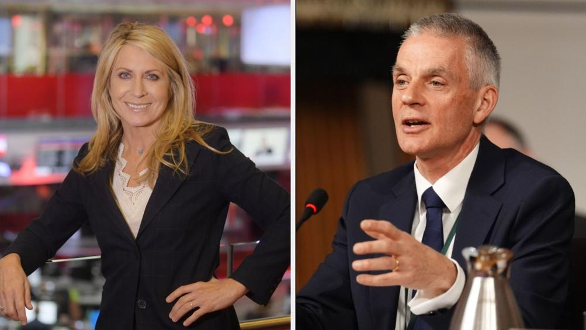

世界苦茶11月10日新闻 | 29条 | 中国10月CPI与PPI数据出炉

中国10月CPI与PPI数据出炉 | 郑丽文出席追思活动遭谴责 | 台湾立委沈伯洋全球抓捕 | 超强台风袭击菲律宾近百万撤离 | 美国削减大量航班
苦茶数据
美元兑人民币：7.12（昨日7.12，前日7.12）
美元兑日元：153.82（昨日153.54，前日153.19）
上证指数：3996（昨日3997，前日4005)
标普500指数：休市（昨日6728，前日6720）
比特币：105882（昨日101656，前日102481）
布伦特原油：64.09（昨日63.63，前日63.68）
中国新闻
• 纽约“中国独立电影节”取消 策展人称受不明势力骚扰。
原定在美国纽约举办的首届“中国独立电影节”临时取消，策展人、中国独立电影工作者朱日坤称，参与电影节的人员近日受到“不明势力”骚扰，他因此被迫作出“异常痛苦”的取消决定。朱日坤星期四在脸书宣布电影节取消的消息。他透露上月底接到父亲来电，问他“有没有在外面做什么不好的事情”，让他意识到事有蹊跷。朱日坤称，他之后接获几乎所有在中国境内的导演来信，称因个人原因取消赴纽约参加电影节的行程，并要求撤销影片，不得上映。他进一步称，许多导演和嘉宾在中国的家属都受调查或干扰，一些在美国协助他的志愿者也因家人受威胁而辞去职务。他写道，自己“并非出于害怕或屈服而作出决定”。
• 中国大陆官媒称可对沈伯洋展开全球抓捕。
中国大陆官媒发布影片，抨击上月底被重庆公安局立案调查的台湾民进党立委沈伯洋，并称可对他展开全球范围抓捕。沈伯洋反指大陆通过官媒造谣，台湾大陆委员会则指大陆对台湾没有管辖权。央视新闻星期六发布约七分半钟的影片影片也指沈伯洋借助外部势力，推动一系列实质台独议程，包括获美国国际开发署约135万美元资助。今年10月28日，重庆市公安局通报指沈伯洋通过建立台独分裂组织“黑熊学院”等方式，从事分裂国家犯罪活动，决定依法追究他的刑事责任。中国人民大学法学院教授程雷在影片中说，下一步发布通缉令后，“我们可以利用国际刑警组织等一系列的国际组织，红通等一系列追捕措施，在全球范围内对他进行抓捕”。
• 随着核紧张局势升级，解放军在一次罕见的实地测试中出现“脏弹”后果。
解放军团队在罕见实地演练中模拟“脏弹”污染尘埃 随着核紧张局势升温 中国天气改造技术或可助对抗放射性沉降 研究显示 由联勤保障部队工程大学与火箭军研究院联合开展的这项研究探讨了一种类似天气改造的先进机载系统，如何在放射性爆炸后迅速抑制并遏制致命的放射性烟云。脏弹因此成为一种理想的恐怖主义工具，目的在于制造恐惧、破坏和长期污染。“目前正在研发的移动式、可快速部署的空中抑制系统可在爆炸发生后立即实施高空、大范围的爆炸生成烟云抑制，”由联勤保障部队核应急专家林元业领导的项目组写道。
• 中国开放更多结婚场所，夜店也能领证。
2025年11月9日中国放宽结婚登记限制后，全国各地纷纷推出“结婚新玩法”：雪山、地铁站、观音寺甚至夜店都可以登记结婚。数据显示今年第三季度全国结婚登记数量同比上升22.5%，但专家警告，这一热潮或难以持久，真正推动婚育率上升的仍是收入增加以及与安全感提升。银行职员任盈潇与伴侣在寻找蜜月旅行目的地时，偶然发现新疆有一个风景优美的地点——赛里木湖。这个地方不仅有湖光山色，还有一个婚姻登记处。“所以我们就想，为什么不干脆在那里领结婚证呢？”30岁的任盈潇说道。当地政府正在努力吸引年轻人到此“喜结连理”，以响应全国范围内提升结婚率、缓解人口危机的政策。
• 中国悄然遏制与嫌疑人死亡有关的羁押程序滥用。
新指南就“指定居所监视居住”的监督、审批和执行作出限制并在网上泄露 当局尚未就这些变动作出正式公告。但上个月，一份关于新指南的泄露文件在网上流传，增加了监督条款并限制了所谓“指定居所监视居住”这一措施的审批和实施方式。“指定居所监视居住”最初在1979年被纳入中国《刑事诉讼法》，作为一种类似软性限制人身自由的措施，类似软禁。多年来，在侦办有组织犯罪和国家安全案件时，警方经常使用该措施，后又扩展到较轻微的罪行，嫌疑人常被关押在特殊场所并遭受酷刑。
• 围绕一家中国书店的争斗如何加剧了人们对文化被挤压的担忧。
位于西南城市成都的一家颇受欢迎场所的命运凸显了公共活动面临的日益压力。尽管该书店现在似乎暂时获缓，但有关这一过程的一些关键细节——包括决定其命运的决策过程——仍不清楚。10月29日，两年前在四川省会开设这家书店的作家与评论员张峰在社交媒体上写道，书店将不得不关闭，因为它正面临一股“不可抗力”——这个词常被用作政治压力的委婉说法。张峰写道：“我曾想象过书店可能的多种结局。最有可能的就是不可抗力——现在，它真的来了。好吧。朋友们，我已奋战过了。
• 中国国安部公布“翻墙”被追究刑事责任案例：泄露机密、传播“涉华政治谣言”。
中国国安部今天发文《“翻墙”？假猎奇，真危险》称，个别网民法律和风险防范意识淡薄，违法使用“翻墙”软件（俗称VPN或“梯子”）访问境外网站、注册账号以及参与群组聊天。贪图猎奇不仅可能带来个人信息安全风险，甚至影响国家安全和社会稳定。可能导致个人隐私信息泄露、境外间谍网络窃密、以及诱发连锁违法风险。某涉密单位工作人员为访问境外学术论坛，误装实为境外间谍情报机关研发的“翻墙”软件，导致其工作手机和电脑被远程控制，大量涉密研究资料被窃取，国家安全机关依法对其追究刑事责任。某国企员工长期访问境外反华网站，观看涉华政治谣言视频并下载传播，被国家安全机关依法逮捕。
印太新闻
• 郑丽文出席追思“共谍”活动 遭台湾陆委会谴责。
台湾最大在野党、国民党主席郑丽文出席“1950年代白色恐怖秋祭追思慰灵大会”，追思对象包括中国大陆曾安插在台湾政府内的最高阶间谍吴石，引起争议。尽管郑丽文澄清活动与吴石完全无关，并称吴石不是政治犯，仍招来党内外批评，台湾大陆委员会谴责郑丽文出席追思“共谍吴石活动”是对台湾“尊严最严重的伤害”。郑丽文星期六出席由“台湾地区政治受难人互助会”举办的白色恐怖追思大会。综合《联合报》《自由时报》、公视新闻网等报道，事前有消息指秋祭活动要纪念吴石，主办单位虽撇清并无吴石，但现场还是出现吴石的照片。陆委会同天晚上发声明表达严正立场，谴责郑丽文身为重要政党负责人。
• 菲律宾遭遇“强烈”台风，近一百万人撤离。
菲律宾遭遇“强烈”台风，近百万民众撤离 台风冯凤在菲律宾登陆，逾90万人已被疏散，造成2人死亡。该风暴以相当于超强台风的强度登陆，持续风速约185公里/小时，阵风达230公里/小时。风眼于当地时间21:10袭击吕宋岛奥罗拉省——菲律宾人口最多的岛屿。到次日02:00，风暴已减弱为台风，位于吕宋西部的拉乌尼翁省上空。国家气象部门警告称，这场“非常强烈”的台风将带来破坏性大风和“高风险、危及生命”的风暴潮。冯凤在菲律宾先前受台风卡尔迈吉影响、近200人死亡数日后侵袭。
• 首尔欲借助核动力潜艇抵御平壤威胁。
2025年11月9日特朗普公开支持首尔在美建造首艘核动力潜艇。韩国正努力与朝鲜在军事上抗衡。美国总统特朗普上周公开支持韩国建造核动力潜艇，并补充说，首艘潜艇将在美国制造。“韩国将在费城船厂建造其核动力潜艇”，特朗普在其Truth Social平台写道。首尔随即对此表示赞扬，称具有巨大的军事意义。韩国目前运作的是常规潜艇，使用柴电混合动力。但核动力潜艇将提高速度和续航能力，以应对朝鲜的威胁。尽管平壤尚未正式回应，但预计会表示愤怒并作出反制。分析：韩国处于军备竞赛中 或涉核武 专家警告，朝韩或加速军备竞赛。“我认为我们 已经在一场军备竞赛中”。
科技新闻
• 中国在重返月球的竞赛中倒计时，长征十号试飞即将进行。
研究人员将对这枚旨在在2030年前将宇航员送上月球的火箭进行试验，开发者称将加速推进 中国航天科技集团旗下的中国运载火箭技术研究院的火箭专家荣毅周五在社交媒体上表示，新一代载人运载火箭长征十号的研发正在加速。“关键技术已取得突破，示范验证飞行即将开展，以支撑载人登月任务，”荣在中国航天科技集团的社交媒体账号上写道。她表示，研究人员还在推进可重复使用火箭的大规模应用，并构建低成本、高频次入太空的能力。中国计划在五年内将宇航员送上月球，成为继美国之后第二个实现月球载人登陆的国家。
经济新闻
• 中国10月CPI与PPI数据出炉。
10月CPI同比增速0.2%，环比0.2%；PPI同比增速-2.1%，环比回升至0.1%。10月通胀保持稳步回升。食品拖累减轻，核心服务价格环比逆季节性上升，同比来到2024年3月以来的最高水平。反内卷治理、财政发力、黄金上涨是近期核心通胀持续攀升的主要动力，但中长期回升仍需要居民消费能力和动力的改善，以及高质量消费场景的供给。PPI环比在10月略升，但上游原材料价格得回升动能有所减弱，静待价格传导向下游扩散。
• 中国已恢复部分安世半导体晶片出口。
实施出口禁令超过一个月后，中国恢复出口部分安世半导体晶片，条件是购买方承诺晶片仅用于民用用途。荷兰政府今年9月底以国家安全为由，强制接管隶属于中国闻泰科技的安世半导体。北京随后对安世在华工厂实施出口禁令，引发全球汽车制造供应链中断的担忧。不过，美国总统特朗普和中国国家主席习近平10月底于韩国会晤、就经贸问题达成一定共识后，安世风波出现转机。欧盟委员会贸易与经济安全专员谢夫乔维奇当地时间星期六在社媒平台X发文透露，中国商务部已确认将“进一步简化安世晶片出口至欧盟和全球客户的程序”，他对此表示欢迎。谢夫乔维奇指出，中国商务部将给予所有出口商许可豁免。
• 黄奇帆：中国“内循环”为主并非开放程度降低。
重庆市原市长黄奇帆说，中国目前以“内循环”为主，并不意味着开放程度降低，反而是“更高水平、更深层次、更宽领域”的开放。黄奇帆星期五在新加坡中华总商会于上海举办的2025新中商务论坛上发言，阐述新格局下中国开放的新特征、新成就和新任务。黄奇帆目前是中国国家创新与发展战略研究会学术委员会常务副主席。“新发展格局”是2020年5月中共政治局常务会议提出的概念，具体表述为“以国内大循环为主体、国内国际双循环相互促进”。同年，这一概念被写入“十四五”规划，成为过去五年中国经济社会发展的指导方针。
• 为争取支持，特朗普又说要用关税收入给美国人打钱，但他算错了。
据卫报报道，周日，特朗普在Truth Social平台上表示，考虑动用关税收入，向大多数美国人发放2000美元，显然是为了争取公众支持。他写道：“每人将获得至少2000美元的分红。” 他还在帖文中特别强调，反对征收关税的人是“傻子”。这项计划可能需要国会批准。今年早些时候，密苏里州共和党参议员霍利提出一项法案，建议向几乎所有美国人及其子女发放600美元的关税返还。霍利当时表示：“在拜登政府四年的政策摧毁家庭储蓄和生计之后，美国人理应获得减税。” 他称这项法案将“让辛勤工作的美国人受益于特朗普关税带回国内的财富”。然而，美国财政部长贝森特在8月表示，政府目前的重点仍是利用关税收入来削减国债。
• 缅甸清剿KK园区 其它诈骗点渔翁得利。
2025年11月9日据法新社报道，缅甸政府最近突袭了该国妙瓦底的大型网络诈骗中心，但之后，“失业”的诈骗者又涌入附近另外的诈骗地点。在东南亚地区，网络诈骗中心并不罕见，每年精心设计的爱情骗局以及加密货币诈骗，从受害者手中榨取数十亿美元。分析人士称，许多打工的诈骗者是被拐骗到这些网络诈骗区的，但也有一些人为了获得丰厚的工资而自愿在那里工作。今年10月下旬，缅甸政府发动突袭，捣毁该国东部靠近泰国边境的妙瓦底诈骗园KK园区，大约1500人逃往邻近的泰国，但许多人决定留下来在缅甸的黑市上继续寻找新的机会。
• 在巨额债务下，中国坚持推进国内外的高铁项目。
日经亚洲报道指出，中国高铁建设雄心勃勃，债务规模已逼近1万亿美元，但中国似乎决意继续推进这一进程。上个月，外交部新闻发布会上有记者提问有关重组印度尼西亚高铁项目债务的谈判问题，这条铁路由中国提供资金和技术支持。外交部发言人郭家坤回应了有关债务和铁路建设的话题。郭家坤表示：“在评估高铁项目时，除了财务数据和经济指标，还必须考虑其公共效益和综合回报。” 印尼高铁项目两年前开始运营，由中国提供资金与技术支持。然而票价收入未达预期，债务迅速上升。郭家坤的发言并未具体回应印尼项目，而是泛泛而谈高铁建设整体问题。实际上，中国也正面临大量债务缠身的高铁项目。
• 为什么“专精特新”小巨人能在中国制造业重镇江苏蓬勃发展。
规模小但高度专业化、以创新为驱动的企业正助力国家科技自立自强。8月由江苏省政府组织的一次短暂考察行程将这些企业置于聚光灯下，参与者参观了制造、机器人、医疗、人工智能和新能源等领域的公司，展示了该省的技术进步与创新成果。这也反映了江苏的制造业成功。江苏人口约8500万，国土面积略大于韩国，去年人均国内生产总值为2.25万美元。尽管过去二十年中国互联网经济迅速崛起，作为全国最发达地区之一的江苏尚未诞生出华为，腾讯或阿里巴巴那样的科技巨头。但随着北京宣布创新驱动已进入“深水区”，轻易可得的红利已成过去，更艰难的挑战随之而来。
俄乌战争
• 泽连斯基表示，欧盟第20轮对俄制裁将在“一个月内”准备就绪。
泽连斯基11月9日宣布，欧盟第20轮对俄制裁方案正在制定中，将在“一个月内”准备就绪。此消息距欧盟第19轮制裁于10月23日获批仅数周。欧盟委员会于9月19日公布的那一轮制裁针对俄罗斯银行、能源收入以及参与规避对莫斯科因对乌全面战争而实施的现有限制的网络。欧盟还首次对加密平台以及在俄罗斯和其他国家帮助规避制裁的银行实施限制。泽连斯基表示，基辅将提议第20轮制裁“针对仍从能源资源中获利的俄罗斯法人和个人”。
• 过去24小时内，俄罗斯袭击在顿涅茨克州和赫尔松州造成3人死亡、18人受伤。
乌克兰官员11月9日报道，过去一天内俄罗斯袭击在顿涅茨克州和赫尔松州造成3人死亡，至少18人受伤。顿涅茨克州州长瓦迪姆·菲拉什金表示，俄罗斯袭击在顿涅茨克州造成3人死亡：科斯坦丁尼夫卡市2人，奥列克桑德里夫卡镇1人。科斯坦丁尼夫卡周边另有3人受伤，金德拉蒂夫卡村有3人受伤。顿涅茨克州记录到19起俄方炮击事件。共有137人从靠近前线的地区被疏散，其中包括24名儿童。赫尔松州军方行政当局报告称，俄方无人机，炮击和空袭在赫尔松州造成7人受伤，5栋公寓楼和10座民房受损。11月9日下午又一轮俄方炮击导致另外2名平民受伤。第聂伯市州长弗拉迪斯拉夫·海瓦年科报告称。
• 拉夫罗夫再度公开露面并表示准备与鲁比奥会面。
资深俄罗斯外长谢尔盖·拉夫罗夫表示，他准备与美国国务卿马尔科·卢比奥进行面对面会晤，但强调在讨论乌克兰战争时必须考虑莫斯科的利益。拉夫罗夫在周日发布于俄新社的一次采访中说：“讨论乌克兰问题并推动双边议程很重要。正因如此，我们通过电话沟通，并在必要时准备举行面对面会谈。
世界新闻
**• 美国部分民主党参议员与共和党达成协议，有望结束政府“停摆”。 **
知情人士称，协议将为政府提供资金至2026年1月底，同时为农业部、退伍军人事务部和国会本身提供全年拨款。参议院则将在2025年12月就延长《平价医疗法案》（“奥巴马医保”）进行投票，但不保证通过。协议还可能包括撤销特朗普解雇联邦雇员的行为，并防止未来采取此类行为的条款。知情人士称，民主党人意识到特朗普反对延长《平价医疗法案》的强硬做法阻止了在该问题上达成两党协议的机会。而他们其中一些人愿意接受单独投票。一名民主党参议员称，虽然大多数民主党人可能会投反对票，但已有足够的人数支持结束政府“停摆”的协议。
**• BBC总裁蒂姆·戴维和新闻部门首席执行官德博拉·特尼斯11月9日宣布辞职。 **
《每日电讯报》披露，BBC《全景》栏目去年播出的纪录片《特朗普：第二次机会？》将特朗普讲话的两个片段拼接在一起，从而让特朗普看起来似乎是在煽动支持者参与2021年1月6日的美国国会大厦骚乱事件。批评人士指出，BBC的做法具有误导性，并删除了特朗普表示希望支持者和平示威的部分。特朗普本人和白宫新闻秘书均批评BBC的做法。戴维在辞职信中称，虽然不是唯一原因，但目前的争议促成了他的辞职决定。他承认BBC并不完美，“我们必须始终保持开放、透明和负责任”。特尼斯则否认BBC新闻存在制度性偏见。BBC预计将于10日就此事道歉。
• 唐纳德·特朗普计划成为自1978年以来首位出席常规赛NFL比赛的在任美国总统。
唐纳德·特朗普成为自1978年吉米·卡特以来首位在常规赛现场观看NFL比赛的在任美国总统 马里兰州兰多弗——总统唐纳德·特朗普周日在华盛顿指挥官队对阵底特律雄狮队的比赛中成为近半个世纪来首位出现在常规赛现场的在任总统。上半场临近结束时，球场大屏幕出现特朗普与众议院议长迈克·约翰逊同在包厢的画面，观众席中响起了嘘声。当日稍早，特朗普在空军一号抵达安德鲁斯联合基地下机时对记者说：“我有点晚了。”在比赛期间，他的专机还在西北球场上空飞过。随后他乘坐防弹车前往球场。“我们会看到一场好比赛。一切进展得很好。国家状况良好。民主党人得把它放开，”他在此处指的是政府关门问题。
• 政府要求各州“立即撤销”为资助11月SNAP福利所采取的措施。
特朗普政府周六深夜指示各州“立即撤销”为11月发放补充营养援助计划福利所采取的措施。美国农业部在一份声明中表示：“如果各州已为2025年11月发送了完整的SNAP付款文件，这是未经授权的。因此，各州必须立即撤销为发放2025年11月完整SNAP福利而采取的任何步骤。请将为纠正任何不符合本备忘录的行为所采取的措施告知相应的食品与营养服务地区办事处代表。” 该指示是在美国最高法院周五深夜批准一项行政暂缓令之后发布的，暂缓执行了下级法院此前要求特朗普政府为11月足额支付SNAP福利的命令。最高法院表示，其命令将持续有效，直到美国第一巡回上诉法院对政府在该院提出的暂缓请求作出裁决。
• 英国、法国和德国向比利时部署反无人机小组。
英国参谋长理查德·奈顿周日在接受BBC采访时表示，英国正在效仿法国和德国，派遣人员和装备协助比利时应对围绕敏感设施的无人机入侵。比利时防长西奥·弗兰肯感谢“我们的英国朋友”决定在比利时部署反无人机小组，此前法国和德国也在近日宣布了类似举措。上周布鲁塞尔和列日的机场在其空域发现不明无人机后被迫暂停航班，最近还有无人机飞越安特卫普港口。甚至比利时的军用基地也成为了目标。
• 为什么法国前总统萨科齐可能仅服刑20天就获释。
为什么法国前总统萨科齐可能在仅被监禁20天后获释 巴黎——巴黎一家法院将于周一决定是否释放法国前总统尼古拉·萨科齐，他在被监禁仅20天后将面临此一裁定。萨科齐因在一项以利比亚资金为其2007年胜选竞选提供资助的阴谋中被判犯有犯罪合谋罪，判处五年监禁。现年70岁的萨科齐是现代法国首位被判实际监禁的前总统。他此前曾因贿赂等腐败指控被定罪，但当时被要求佩戴电子脚镣而未入狱。萨科齐的律师团正在上诉其定罪，并已提出提前释放申请。上诉审判将在稍后举行，可能在春季。周一，巴黎一家法院将审查他的释放请求，预计当日晚些时候做出决定。这位曾于2007年至2012年任总统的人士表示自己无罪。
• 随着美国空中交通削减进入第二天，超过1400班航班已被取消。
随着美国空中交通削减进入第二天，超过1400架航班被取消 美国联邦政府停摆导致本周航空公司被要求削减航班量，周六美国境内、进出美国或在美境内的航班中有超过1400架被取消。航班跟踪网站FlightAware数据显示，近6000架航班也出现延误，较周五超过7000次延误有所减少。联邦航空管理局本周早些时候宣布，将在全国最繁忙的40个机场将航空运输能力最多减少10%，因为在停摆期间无薪工作的空中交通管制员报告疲劳。共和党和民主党在国会如何结束僵局的问题上仍存在分歧。周六是美国历史上最长停摆的第39天。参议员们周末在华盛顿进行两党谈判，旨在解决僵局。
• 叙利亚的沙拉抵达美国，在制裁解除后与特朗普进行会谈。
叙利亚总统艾哈迈德·沙拉阿抵达美国与特朗普会谈，此前制裁被解除 叙利亚总统艾哈迈德·沙拉阿已抵达华盛顿进行正式访问，这距离美国正式撤销他“特别指定全球恐怖分子”身份仅两天时间。这位前伊斯兰主义武装分子将于周一在白宫会见美国总统唐纳德·特朗普，此前11个月他的反叛联军将巴沙尔·阿萨德逐出政权。就在他抵达美国首都数小时之前，叙利亚当局宣布拘捕了数十名所谓“伊斯兰国”疑犯。打击该组织残余势力的联合努力预计将成为沙拉阿与特朗普会谈的议程重点。叙利亚当局表示逮捕了71名疑似成员，并缴获了武器和爆炸物。上台以来，沙拉阿力图在经历阿萨德政权数十年的孤立与长达13年的内战后。